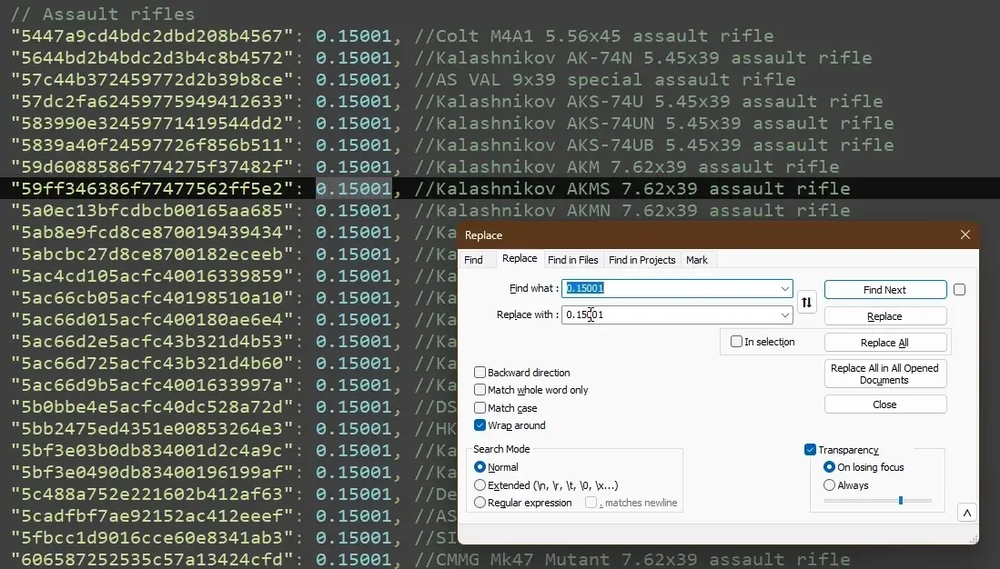
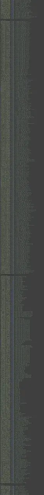

Global Flea Dynamics (DFP Addon)
- Downloads
- 146
Global Flea Dynamics is just a config for Dynamic Flea Price (DFP).
It takes all items from the Database Set on Github, and applies a configurable multiplier to each.
– Is it balanced? –
Sort of. You can manipulate it since selling impacts the market harder;
"moreMultiplierPerSelling": 2,
The numbers aren’t completely dialed in for balance, but they should be good enough!
– Can I change the multipliers? –
Of course! Just remember, rounds are unique and have their own multipliers of 0.00150.
I’ve categorized each item and applied a multiplier that counts each category. For example:
"Assault Rifles" = 0.15001
"Ammo Packs" = 0.15002
"Mechanical Keys" = 0.15003
"etc" = ...

This allows you to search & replace for each of the 65 categories OR change all with replacing 0.15.
All Items, configured for a dynamic flea market.

Version
1.0.0
Initial Release containing the .json5 changes.
nuked from forge, try source code url